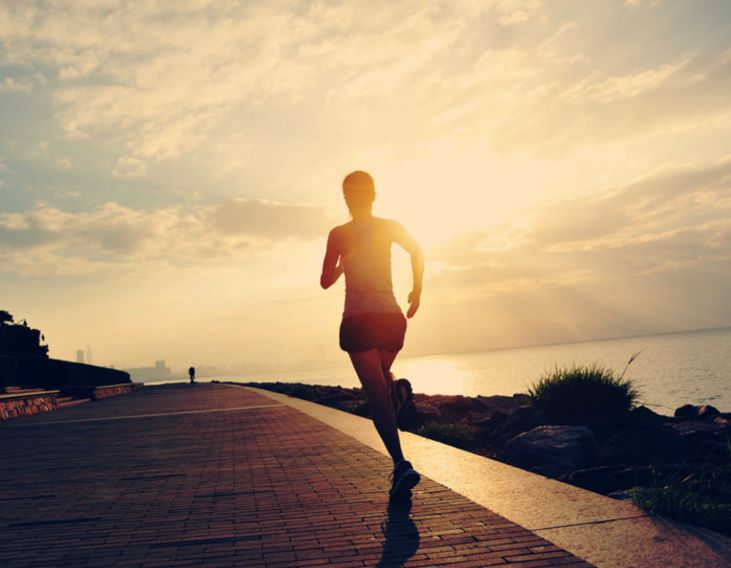

慢跑减肥正确方法 轻松快速燃烧脂肪
2018-04-22
15:23:00
大众网
1.慢跑多久可以减肥
慢跑要取得减肥的效果，需要跑多远和跑多久呢。由于每个人的步幅和跑步的速度都不同。 因此慢跑减肥在时间上并没有明确的要求。但是在路程上却要求达到5000米，跑步的速度也不能太慢哦。
5000米结束后，双腿已经处于紧绷和僵硬的状态。因此这个时候你需要对小腿和大腿进行拉伸运动。 拉伸运动可以选择压腿、捶打小腿和大腿外侧等。拉伸运动的时间为15分钟。慢跑后的拉伸运动很重要哦， 它可以预防小腿长出肌肉。
2.慢跑前的准备动作
知道了慢跑的路程后，接下来就开始慢跑减肥吧。慢跑前先来做热身运动， 让肌肉变得柔软，避免拉伤。转动脚踝和手腕多次。
3.慢跑减肥的正确方法
热身运动后就开始正式的慢跑。慢跑的姿势决定了跑步的时间和速度。肌肉达到有氧阶段 的时间为20-30分钟。时间太长并不一定减肥效果越好。反而会造成肌肉疲劳。
4.慢跑的姿势很重要
慢跑时两脚交替太高，活动髋关节，太高速度，让膝盖尽可能触及上腹部，手臂前后摆动即可。 跑步的时候前脚掌先着地，然后过渡到全脚掌着地。
5.慢跑减肥的速度不能过快
将有氧心率控制在60%-80%最好，这样可以避免无效运动。练习慢跑的最佳时间为清晨或者傍晚。